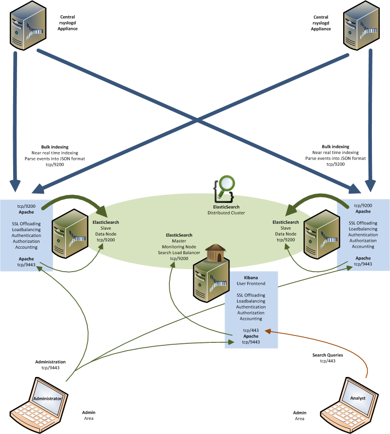

ELMA allows you to start small, but will grow with your infrastructure and requirements. It is built to scale horizontally out of the box. As you need more data store capacity, just add more distributed data nodes, and let the underlying ElsasticSearch cluster reorganize itself to take advantage of the extra hardware.
ElasticSearch clusters are resilient - they will detect and remove failed nodes, and reorganize themselves to ensure that your data is safe and accessible - High availability.
This HOWTO explains the communication matrix, loadbalancing and redundancy concepts inside ELMA components.
Here is a simple overview of deploying an distributed ElasticSearch cluster on multiple ELMA appliances with dedicated roles:

http://wiki.rsyslog.com/index.php/FailoverSyslogServer
“A master in elasticsearch is responsible for handling nodes coming and going and allocation of shards.” (quoting Shay)
Now here comes my own understanding:
A master may hold data or not. A “load balancer” would be a node that doesn’t hold data (node.data: false), but has the HTTP transport enabled. From what I know it doesn’t need to be a master as well. The idea is that client apps would send requests to it, and the load balancer would forward the requests to the nodes having the needed shards, and also gather the results.
Then, you would have “load balanced” nodes, if you will. Those would be nodes that hold data, but with HTTP transport disabled (http.enabled: false). They will only be “workhorses” and won’t be bothered with stuff like HTTP requests for clients or redirecting requests to other data nodes.
node.master set to true means that node can be elected to become a master in cluster. node.data set to true means that a node will be allocated with shards (“data”). Setting both to false (or simply setting node.client to true) will cause the node to act as a client to the cluster, potentially acting as a load balancer.
http://vincentdevillers.blogspot.de/2013/04/how-to-deploy-elasticsearch-cluster.html
http://www.elasticsearch.org/guide/reference/modules/node.html
accepted
The master node is the same as any other node in the cluster, except that it has been elected to be the master.
It is responsible for coordinating any cluster-wide changes, such as as the addition or removal of a node, creation, deletion or change of state (ie open/close) of an index, and the allocation of shards to nodes. When any of these changes occur, the “cluster state” is updated by the master and published to all other nodes in the cluster. It is the only node that may publish a new cluster state.
The tasks that a master performs are lightweight. Any tasks that deal with data (eg indexing, searching etc) do not need to involve the master. If you choose to run the master as a non-data node (ie a node that acts as master and as a router, but doesn’t contain any data) then the master can run happily on a smallish box.
A node is allowed to become a master if it is marked as “master eligible” (which all nodes are by default). If the current master goes down, a new master will be elected by the cluster.
An important configuration option in your cluster is minimum_master_nodes. This specifies the number of “master eligible” nodes that a node must be able to see in order to be part of a cluster. Its purpose is to avoid “split brain” ie having the cluster separate into two clusters, both of which think that they are functioning correctly.
For instance, if you have 3 nodes, all of which are master eligible, and set minimum_master_nodes to 1, then if the third node is separated from the other two it, it still sees one master-eligible node (itself) and thinks that it can form a cluster by itself.
Instead, set minimum_master_nodes to 2 in this case (number of nodes / 2 + 1), then if the third node separates, it won’t see enough master nodes, and thus won’t form a cluster by itself. It will keep trying to join the original cluster.
While Elasticsearch tries very hard to choose the correct defaults, minimum_master_nodes is impossible to guess, as it has no way of knowing how many nodes you intend to run. This is something you must configure yourself.